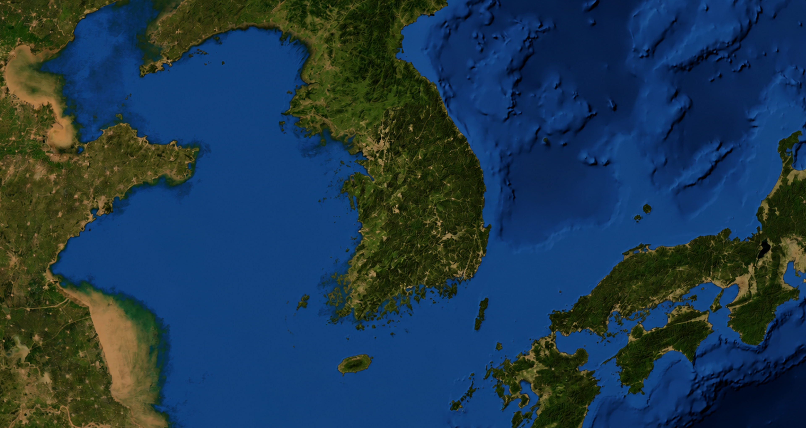

기상포털
전체메뉴
기상청
예·특보
예보
특보
현재날씨
태풍
해구별 해양기상정보
해구별 값 9종 · 대해구도·소해구도
저고도 WINTEM
항공기상청 고도별 바람 · 기온 예측
기타
CMEMS 예측
모델
코페르니쿠스 해양서비스
GOCI-II 위성
관측
천리안위성 2B호 관측 장면
GDACS 재난
자동산출
글로벌 재난 인식 및 조정 시스템
브리핑
해상풍·파고 예상도
기상청 예상도 그림(ReWW3 · 3시간 간격)
출항 브리핑
출항 판단 · 조위 · 관측값을 한 화면에
태풍특보비교
기상청 · JTWC · JMA · NOAA 진로 비교
--:--:-- KST
초
초기 관리자
초기 관리자
관리자 계정

덕적도
3.5
m/s
↘
파고 0.3m
서해170
1.1
m/s
↖
파고 1.2m
서천
0.2
m/s
↓
파고 0.0m
동해78
4.6
m/s
↘
파고 1.4m
독도
0.7
m/s
↙
파고 0.0m
서해190
2.3
m/s
↙
파고 1.7m
서해206
2.3
m/s
↙
파고 1.4m
거가도
6.2
m/s
↙
파고 1.6m
신안
5.1
m/s
↓
파고 0.3m
나로도
0.5
m/s
↙
파고 0.0m
기장
1.1
m/s
↓
파고 0.0m
하도
0.3
m/s
↓
파고 0.0m
남해239
6.0
m/s
↓
파고 1.8m
남해465
8.2
m/s
↙
파고 2.3m
NASA/GSFC SVS | NASA/USGS · NOAA ETOPO · 기상청
기상청
기타
브리핑
지도